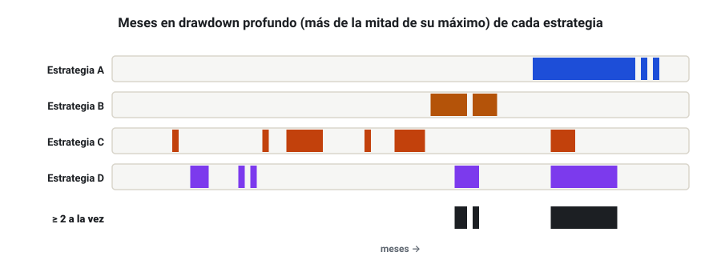
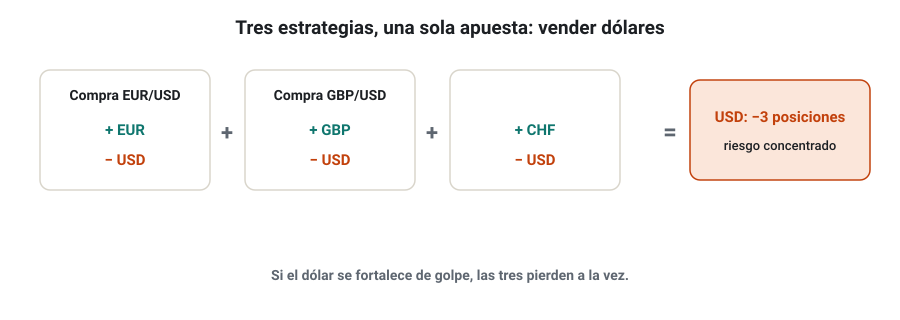
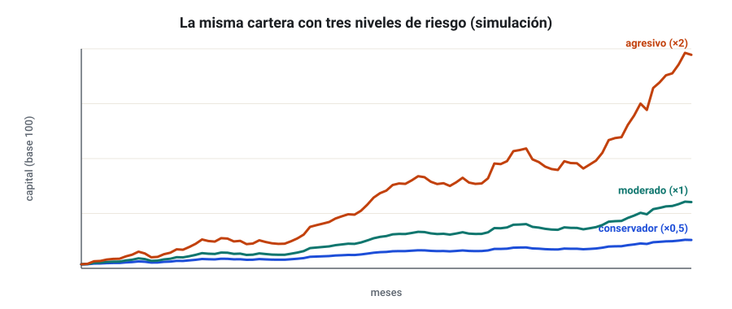
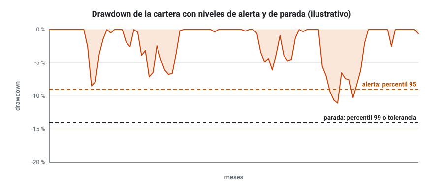
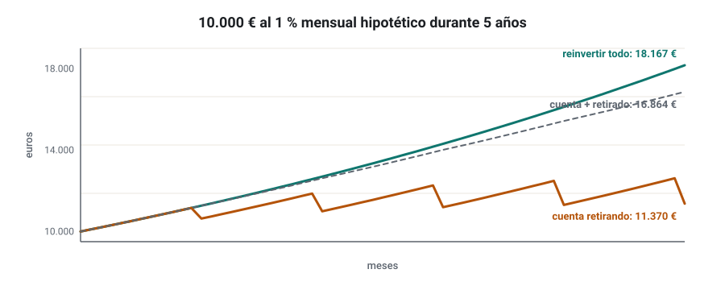

SEMANA 14 · ETAPA 4 · CARTERAS Y EJECUCIÓN
Correlación, diversificación e interés compuesto
Presentación de la semana
La semana pasada construiste tu primera cartera. Esta semana aprenderás a gestionar su riesgo como un todo: a mirar no solo si las estrategias están correlacionadas, sino si pierden a la vez; a detectar exposiciones duplicadas que no se ven a simple vista; a elegir un perfil de gestión conservador, moderado o agresivo con números; a poner límites a la cartera; y a decidir qué hacer con los beneficios: reinvertirlos, retirarlos o ambas cosas.
Objetivos
Al terminar la semana sabrás:
- Medir la correlación de los drawdowns, no solo de los resultados.
- Detectar y limitar la exposición conjunta y duplicada.
- Definir perfiles de gestión con su riesgo y su rentabilidad esperables.
- Fijar límites de riesgo a nivel de cartera.
- Planificar la reinversión y las retiradas con interés compuesto.
Plan de la semana (22–25 horas)
| Bloque | Horas | Qué harás |
|---|---|---|
| Clases | 5 | Cinco lecciones: lectura y vídeos |
| Prácticas | 13 | Análisis de riesgo de tu cartera y plan de gestión |
| Investigación y evaluación | 4 | Investigación I-14, entrega y examen |
| Revisión y planificación | 2 | Glosario, cuaderno y plan de la semana 15 |
Qué necesitas
- Tu cartera de la semana 13 y su plantilla de hoja de cálculo.
- Los resultados mensuales y, si puedes, diarios de cada estrategia.
Criterio para desbloquear la semana 15
Tener en estado APROBADO, con un 80 % o más cada uno:
- ☐ Examen de la semana 14
- ☐ Entrega práctica: plan de gestión del riesgo de la cartera
- ☐ Investigación I-14: los ocho pasos documentados
Correlación de resultados y de drawdowns
Formato: clase de 35 minutos · Lectura: 30 minutos
La correlación no lo cuenta todo
Dos estrategias pueden tener una correlación baja en sus resultados mensuales y, sin embargo, sufrir sus peores rachas en los mismos meses. La correlación mide el comportamiento medio; el riesgo se juega en los extremos. Y en las crisis, las correlaciones tienden a subir (semana 4).
Correlación de drawdowns
Mide si las estrategias están en drawdown al mismo tiempo:
- Calcula la serie de drawdown de cada estrategia (semana 4) con datos diarios o mensuales.
- Marca los periodos en que cada una está en un drawdown mayor que, por ejemplo, la mitad de su máximo.
- Mira cuántos de esos periodos coinciden entre estrategias.

Comprueba que lo has entendido
- ¿Por qué la correlación de resultados no basta?
- ¿Qué mide la correlación de drawdowns?
- ¿Qué pasa con las correlaciones en las crisis?
Exposición conjunta y duplicada
Formato: clase de 35 minutos · Lectura: 30 minutos
La exposición escondida
Tres estrategias distintas pueden estar apostando a lo mismo sin que lo parezca. En divisas, cada par son dos apuestas: comprar EUR/USD es comprar euros y vender dólares.

Cómo medirla
- Por divisa: suma, para cada divisa, la exposición comprada y vendida de todas las posiciones abiertas (en euros o en riesgo).
- Por factor: en índices, todas las compras de índices de acciones son en buena parte la misma apuesta («apetito por el riesgo»).
- Riesgo abierto total: suma el riesgo hasta el stop de todas las posiciones abiertas.
Cómo limitarla
- Límite por divisa o factor: por ejemplo, riesgo abierto máximo en una misma divisa del 2 % del capital.
- Límite de riesgo abierto total: por ejemplo, 4 % del capital sumando todas las posiciones.
- Reducir el tamaño cuando varias estrategias coinciden en la misma dirección.
En MetaTrader estos límites no vienen de serie en las estrategias exportadas: se controlan con la configuración del riesgo de cada estrategia y con la supervisión (semana 16).
Comprueba que lo has entendido
- Compra de AUD/USD y venta de USD/JPY: ¿qué exposición en dólares tienen juntas?
- ¿Por qué comprar dos índices de acciones a la vez no es diversificar mucho?
- Propón un límite de riesgo abierto por divisa para tu cartera.
Gestión conservadora, moderada y agresiva
Formato: clase de 35 minutos · Lectura: 30 minutos
El mismo motor, tres velocidades
Con la misma cartera puedes elegir cuánto arriesgar. Escalar el riesgo multiplica a la vez la rentabilidad y el drawdown, pero el drawdown crece algo más deprisa por el lastre de la volatilidad (semana 3).
| Perfil | Escala del riesgo | Rentabilidad anual (simulación) | Drawdown del backtest | Drawdown del percentil 95 (Monte Carlo) |
|---|---|---|---|---|
| Conservador | × 0,5 | 6,1 % | 3,6 % | 4,5 % |
| Moderado | × 1 | 12,3 % | 7,0 % | 8,8 % |
| Agresivo | × 2 | 25,5 % | 13,7 % | 17,2 % |
Cartera simulada de la semana 13; las cifras son ilustrativas y no son una previsión.

Cómo elegir
Empieza por el drawdown que tolerarías sin abandonar, no por la rentabilidad que te gustaría. Después:
- Toma el drawdown del percentil 95 o 99 de tu cartera (Monte Carlo).
- Escala el riesgo para que ese drawdown quede por debajo de tu tolerancia.
- Aplica un margen de seguridad: el futuro puede ser peor que cualquier simulación.
Comprueba que lo has entendido
- ¿Por qué el drawdown crece algo más deprisa que la rentabilidad al escalar el riesgo?
- ¿Por dónde se empieza a elegir el perfil?
- Tu tolerancia es un 10 % y el percentil 95 de tu cartera moderada es un 14 %. ¿Qué escala usarías?
Riesgo de cartera, drawdown global y límites
Formato: clase de 30 minutos · Lectura: 25 minutos
Límites a nivel de cartera
Además del riesgo por operación de cada estrategia, conviene fijar límites para el conjunto:
| Límite | Ejemplo | Para qué |
|---|---|---|
| Riesgo por operación | 0,25–0,5 % por estrategia | Que ninguna operación haga daño grave |
| Riesgo abierto total | 3–4 % | Que muchas posiciones a la vez no sumen demasiado |
| Pérdida diaria máxima | 2 % | Parar en días anómalos (y cumplir reglas de fondeo) |
| Drawdown de alerta | Percentil 95 del Monte Carlo | Revisar la cartera |
| Drawdown de parada | Percentil 99 o tu tolerancia máxima | Detener la cartera y analizar |

Qué hacer al llegar a cada nivel
- Alerta: revisar si alguna estrategia se comporta fuera de lo esperado (semana 16). No cambiar nada por impulso.
- Parada: detener la cartera, analizar con calma y decidir con los criterios escritos de antemano si se reanuda, se reduce o se retira.
Comprueba que lo has entendido
- ¿Qué diferencia hay entre el riesgo por operación y el riesgo abierto total?
- ¿Qué haces al llegar al drawdown de alerta?
- ¿Por qué los límites se escriben antes?
Interés compuesto, reinversión y retiradas
Formato: clase de 35 minutos · Lectura: 30 minutos
Reinvertir
Con riesgo fijo por operación (semana 4), la reinversión es automática: si la cuenta crece, las posiciones crecen. Es el interés compuesto de la semana 3 aplicado a la cartera.
Retirar
Si vives o quieres vivir de la cartera, retirarás dinero. Cada retirada reduce la base que compone.

Una política de retiradas
Define de antemano:
- Cuándo: mensual, trimestral o anual. Cuanto menos frecuente, más compone.
- Cuánto: un porcentaje de los beneficios, nunca del capital.
- Condición: no retirar si la cartera está en drawdown; esperar a un nuevo máximo.
- Escalado: aumentar el capital solo con evidencias (semanas 18 y 19).
Comprueba que lo has entendido
- ¿Por qué con riesgo fijo por operación la reinversión es automática?
- ¿Por qué no se retira durante un drawdown?
- Escribe una política de retiradas en tres frases.
Glosario de la semana
| Término | Inglés | Definición |
|---|---|---|
| Correlación de drawdowns | Drawdown correlation | Grado en que varias estrategias están en drawdown a la vez |
| Drawdown de alerta | Warning drawdown | Nivel de caída que obliga a revisar la cartera |
| Drawdown de parada | Stop drawdown | Nivel de caída que obliga a detener la cartera |
| Exposición duplicada | Duplicated exposure | Varias posiciones que apuestan a lo mismo |
| Exposición neta | Net exposure | Suma de lo comprado y lo vendido en una divisa o factor |
| Perfil de gestión | Risk profile | Nivel de riesgo elegido para operar una cartera |
| Pérdida diaria máxima | Daily loss limit | Pérdida a partir de la cual se deja de operar ese día |
| Política de retiradas | Withdrawal policy | Reglas sobre cuándo y cuánto retirar de los beneficios |
| Riesgo abierto | Open risk | Suma del riesgo hasta el stop de las posiciones abiertas |
Ejercicios obligatorios
E1 · Solape de drawdowns. Con los datos de tu cartera, calcula el porcentaje de meses en que al menos dos estrategias están a la vez en un drawdown mayor que la mitad de su máximo.
E2 · Exposición en divisas. Calcula la exposición neta en EUR, USD, GBP y JPY de estas posiciones con el mismo tamaño: compra EUR/USD, venta GBP/USD, compra USD/JPY y compra EUR/JPY.
E3 · Riesgo abierto. Cinco estrategias tienen abiertas posiciones con un riesgo hasta el stop de 0,4 %, 0,5 %, 0,3 %, 0,5 % y 0,4 %. ¿Cuál es el riesgo abierto total? ¿Respeta un límite del 2 %?
E4 · Perfil. Con los datos de tu cartera, calcula la rentabilidad y el drawdown del percentil 95 a escalas de 0,5, 1 y 1,5.
E5 · Tolerancia. ¿Cuánto podrías ver caer tu cuenta sin abandonar? Escríbelo en euros y en porcentaje y elige la escala correspondiente.
E6 · Límites. Escribe tu tabla de límites de cartera con valores justificados.
E7 · Compuesto. Con 5.000 € y un 0,8 % mensual hipotético, calcula el capital a 3 años reinvirtiendo todo y retirando 50 € al mes.
E8 · Política de retiradas. Escribe tu política completa de retiradas.
E9 · Crisis. Elige un periodo de crisis de tus datos (por ejemplo, marzo de 2020) y analiza cómo se comportó cada estrategia de tu cartera.
E10 · Resumen. Redacta el plan de gestión del riesgo de tu cartera en una página.
Investigación I-14 y entrega práctica
Investigación I-14 · ¿Aumentan las correlaciones de mi cartera en los peores momentos?
Paso 1 · Hipótesis. Ejemplo: «La correlación media entre mis estrategias en los meses en que la cartera pierde es mayor que en los meses en que gana».
Paso 2 · Fuentes. Cita al menos una fuente sobre el aumento de las correlaciones en las crisis.
Paso 3 · Datos. Resultados mensuales o diarios de las estrategias de tu cartera.
Paso 4 · Diseño. Define cómo separarás los periodos (cartera en positivo frente a negativo, o peor 20 % de los meses), qué correlación calcularás y el criterio de confirmación.
Pasos 5 y 6 · Generación y validación. Calcula las correlaciones en cada grupo.
Paso 7 · Comparación. Tabla con las correlaciones medias de cada grupo.
Paso 8 · Conclusiones. ¿Se confirma? ¿Qué implica para tus límites de riesgo?
Entrega práctica · Plan de gestión del riesgo
Qué entregar
| Archivo | Contenido |
|---|---|
CODIGO_S14_ENT |
Plan de gestión del riesgo de la cartera: análisis de drawdowns simultáneos, exposición conjunta, perfil elegido con su justificación numérica, tabla de límites y política de retiradas |
CODIGO_S14_HOJA |
Hoja con los cálculos |
CODIGO_S14_INV |
Investigación I-14 |
| Ejercicios | E1 a E10 |
Cómo se evaluará
Se valora que el perfil se elija a partir de la tolerancia y del Monte Carlo, que los límites sean coherentes entre sí y que la política de retiradas sea concreta. Un plan sin límites numéricos queda como NO EVALUABLE.
Examen de la semana 14 · Variante A
Tiempo orientativo: 60 minutos · Puntuación: 100 puntos · Aprobado: 80 puntos · Puedes usar calculadora, pero no el material del curso ni el tutor de IA. Si suspendes, repetirás con otra variante.
Parte A · Opción múltiple (30 puntos, 2 por pregunta)
Parte B · Cálculo (45 puntos, 15 por ejercicio)
B1. Tienes abiertas, con 1 % de riesgo cada una: compra de EUR/USD, compra de AUD/USD, venta de USD/JPY y venta de EUR/GBP. a) Calcula la exposición neta en riesgo de USD, EUR, AUD, JPY y GBP (cada posición suma su riesgo a la divisa comprada y lo resta de la vendida). b) ¿Qué divisa concentra más riesgo? c) ¿Respeta un límite del 2 % por divisa?
B2. El drawdown del percentil 95 de tu cartera es del 9 % con escala 1. Tu tolerancia es del 12 % y quieres un margen de seguridad del 25 % (usar solo el 75 % de la tolerancia). a) ¿Qué drawdown máximo planificas? b) ¿Qué escala usarías, suponiendo proporcionalidad? c) Si la rentabilidad esperada con escala 1 es del 11 %, ¿cuál esperarías aproximadamente?
B3. Con 20.000 € y un 0,7 % mensual hipotético: a) calcula el capital a 2 años reinvirtiendo todo; b) calcula el capital a 2 años retirando 100 € al final de cada mes; c) ¿cuánto has retirado en total en el caso b?
Parte C · Razonamiento (25 puntos)
En un máximo de 250 palabras: explica por qué una cartera con estrategias poco correlacionadas puede sufrir un drawdown mucho mayor que el previsto, y qué medidas de esta semana lo limitarían.